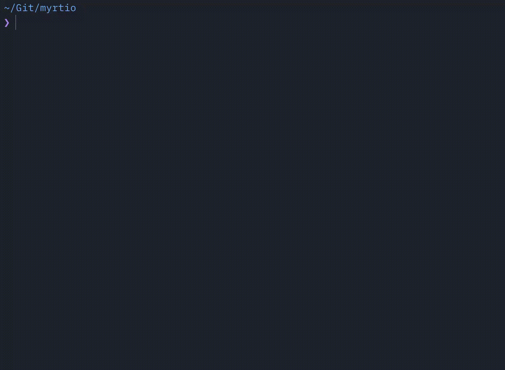

Scan your projects folder, find build artifacts and dependency caches, and reclaim gigabytes of disk space in one shot.
curl -fsSL https://raw.githubusercontent.com/mishamyrt/repomop/master/install.sh | sh

Recursively scans a directory for known build and dependency artifacts.
Calculates the real disk size of each discovered artifact directory.
Presents an interactive list where you pick exactly what to remove.
Asks for confirmation, then permanently deletes the selected directories.
node_modules with pnpm hard links handling
target
.build
Virtualenvs (any directory name)
.gradle, build, out
target
build, cmake-build-*, CMakeFiles
.dart_tool, build
.bundle, vendor/bundle
vendor
Each rule is tied to a project marker file (e.g. Cargo.toml for Rust, package.json for Node.js), so random directories with the same name won't be misidentified.
Install the latest version with a single command:
curl -fsSL https://raw.githubusercontent.com/mishamyrt/repomop/master/install.sh | shBy default the binary is placed in $HOME/.local/bin. To change the destination:
curl -fsSL https://raw.githubusercontent.com/mishamyrt/repomop/master/install.sh | INSTALL_DIR=/usr/local/bin shTo install a specific version:
curl -fsSL https://raw.githubusercontent.com/mishamyrt/repomop/master/install.sh | VERSION=v0.1.0 shNavigate to the directory that contains your projects and run:
repomopYou can also point it at a specific path:
repomop --path ~/Projects| Flag | Description |
|---|---|
--path |
Root directory to scan (defaults to the current directory) |
--max-depth |
Maximum traversal depth (-1 for unlimited) |
--dry-run |
List found artifacts without deleting anything |
--yes |
Skip confirmation and delete all found artifacts |
Navigate the list
Select / deselect item
Proceed to confirmation
Confirm deletion
Cancel and return
Quit
os.RemoveAll.